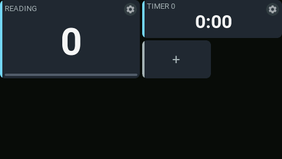
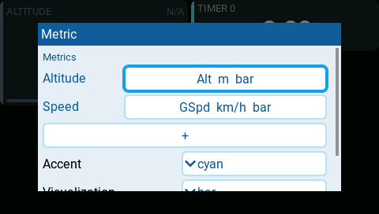
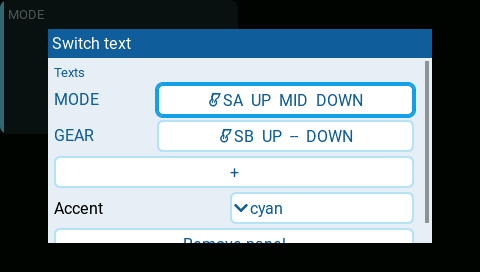
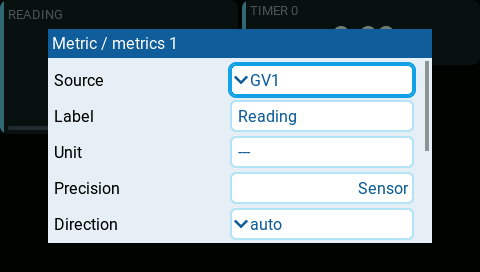
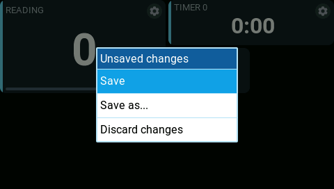
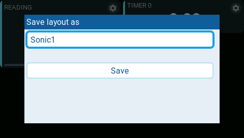

Edit a dashboard on the radio
Add a dashboard first, then customize its panels on the radio.
- Long-press the dashboard to enter fullscreen. The EdgeTX logo in the top-left corner disappears.
- In fullscreen, long-press a panel again to start editing. Enter also starts editing. A gear icon appears in the top-right corner of each panel.

| Action | How |
|---|---|
| Add | Tap the + panel, then choose a panel type. Its settings open automatically. |
| Move | Drag the panel's body to a free position. |
| Reorder | Drag onto another panel. Compatible panels exchange positions or order; other panels stay put. |
| Resize | Drag the top-left, bottom-left, or bottom-right corner. The opposite corner stays fixed. |
| Configure | Tap the gear in the top-right corner. |
| Remove | Open the gear, then choose Remove panel. Removal is immediate. |
Panels snap to the 4 × 4 layout grid. Moves and sizes must fit without overlapping other panels. The + panel disappears when there is no free cell. There are no grid lines or resize handles: drag the corners directly. Moving and resizing require touch.
Configure panels
Use the native choices, toggles, number controls, and text keyboard in the settings dialog. Sources, switches, and timers use EdgeTX pickers.

Metrics and State entries appear as named rows with a summary of their settings. Tap a row to edit it, or tap the full-width + row to add an entry. In a metric entry, choose Source to change the reading.
In a State entry, open a state to edit When, Text, and Background. The first true condition wins. Each entry supports up to three conditions; + appends one at the bottom. Delete and recreate a condition to change its priority. Background choices are normal, active, warning, and critical. The main entry's winning choice sets the whole panel's appearance, including its background, sidebar, text colors, and badge. Supporting entries never change the panel mode.


Press RTN or tap outside a dialog to return one level. Changes remain in your draft.
Save or discard changes
From the editing dashboard, press RTN. If nothing changed, editing closes. Otherwise choose an action:
| Action | Result |
|---|---|
| Save | Updates the current layout and exits editing. |
| Save as... | Asks for a name and saves a separate layout. |
| Discard changes | Exits editing and restores the saved layout. |

Save As suggests the model name plus the first unused number, such as
Sonic1. You can change it using letters, digits, -, and _ (at most
24 characters). An existing name requires overwrite confirmation.
Press RTN in the name dialog to return to the exit menu without losing
your draft.

After Save As, restart the radio and select the new name in the widget's Layout setting. The widget cannot change its own settings, so it continues showing its previous layout until you select the new one.
Layout picker positions are retained in /AEROGRID/layout-registry.txt.
If upgrading an existing installation with /AEROGRID/registry.txt, rename
that file to layout-registry.txt before starting the radio to preserve saved
Layout selections. Do not edit or reorder its entries.
Wait for saving to finish before powering off. A save error keeps your draft
so you can retry; the previous saved file is retained as .bak.
See Understand layouts for where saved layouts live and how multiple dashboards share them.